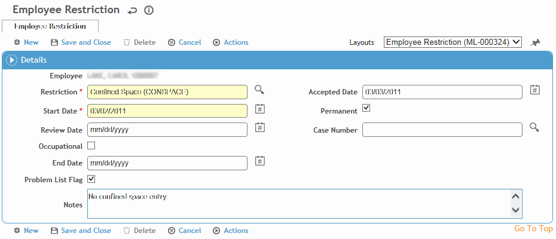

On the Restrictions tab, click a link to edit an existing restriction, or click New.

To quickly add a new record with minimum fields, click and complete the fields as required, then click Save. To add multiple restrictions with the same start date, click  , select all restrictions that apply, then enter the start date. If necessary, you can later open the new records to capture additional information.
, select all restrictions that apply, then enter the start date. If necessary, you can later open the new records to capture additional information.
Select the Restriction, and enter the Start Date (mandatory).
The Restriction list in the Respirator Fit module will not include any restrictions considered solely medical-related (i.e. they are set to “Hide Restriction in Respirator Fit module” in the Restriction look-up table).
Indicate if the restriction is Permanent (restrictions are temporary unless indicated otherwise).
Indicate if the restriction is Occupation-related, and enter the Case Number if not displayed automatically.
Optionally, enter Accepted, Review, and End Dates, and any Notes about the restriction.
To quickly apply the same end date for multiple restrictions, choose Actions»End All Active Restrictions. Enter the Actual End Date and click OK. You can only use this action on restrictions that have the same case number, if applicable, and which do not already have an End Date entered.
If you have linked the restriction to one of an employee's case records and there is an active RWD or LWD absence for the same case number, you are asked if you want to update the absence status as well.
Indicate if the restriction should be included on the Problem List (see Working with the Problem List).
Click Save. Cority checks the Holiday look-up table to see if there are any holidays in this period that apply to this employee.